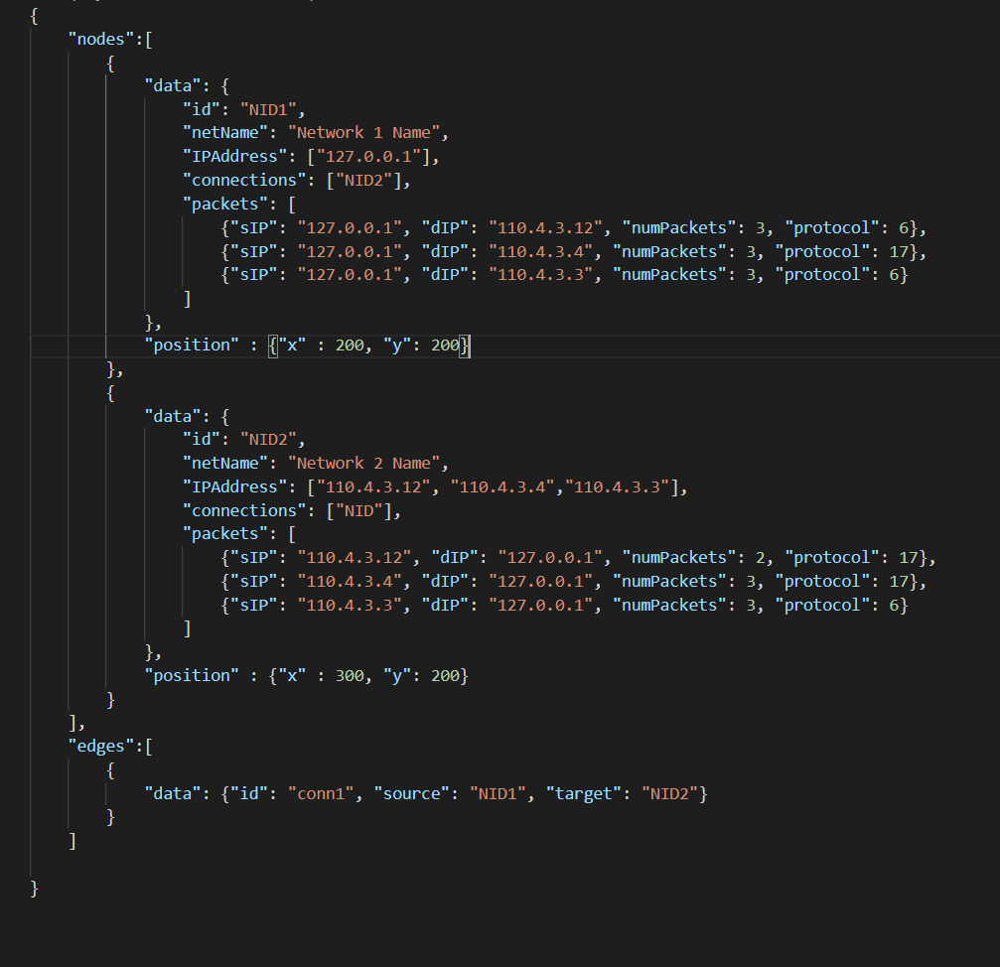

This is a web application to visualize netflow traffic between two or more networks. Clicking the "Visualization" tab will bring you to the main page containing the visualization pane; visualization will require you to insert your own datasets containing the networks and subnets to be visualized. The datasets will have to adhere to a certain format, which will be detailed in the following subsections.
The visualization system currently only supports datasets written in JavaScript Object Notation (JSON). Therefore, any datasets will have to be defined as a .JSON file, and satisfy JSON rules and requirements.
Here is a sample dataset:
a list of all the network nodes in the domain
the data of an individual node to be visualized
the id given to an individual node. Will not be visualized, and primarily used for reference purposes.
the name of a network node. Will be visualized.
all subnets belonging to a network node. Will be visualized as subnet nodes when the network node is clicked on, and can be clicked on again to display information regarding the subnet in question.
the connections the current network has to other networks. Displayed in the information panel.
the number of packets sent from subnets within the current network to other subnets in other networks.
"sIP"
- starting IP; the subnet from where the packet transmission originates
"dIP"
- destination IP; the target destination to which the packet is sent
"numPackets"
- the number of packets sent from the sIP to the dIP
"protocol"
- the protocol used to send the packets. Should be an integer, and adhere to one of the protocols from the list
used to specify the position of a network node on the visual pane. Will use default position if not specified.
used to specify the connections between two or more network nodes. Uses the IDs of the nodes to serve as source/destination to establish the visual connection between them.
"data"
- attributes of the connection (i.e. source network node, target network node)
"id"
- id given to a certain connection. Primarily used for debugging purposes (if any).
"source"
- the network node from which a certain connection will be established. Value should be the ID of the network node.
"target"
- the target node to which the connection will be drawn.
The system presents some keyboard shortcuts for easier navigation and accessibility: